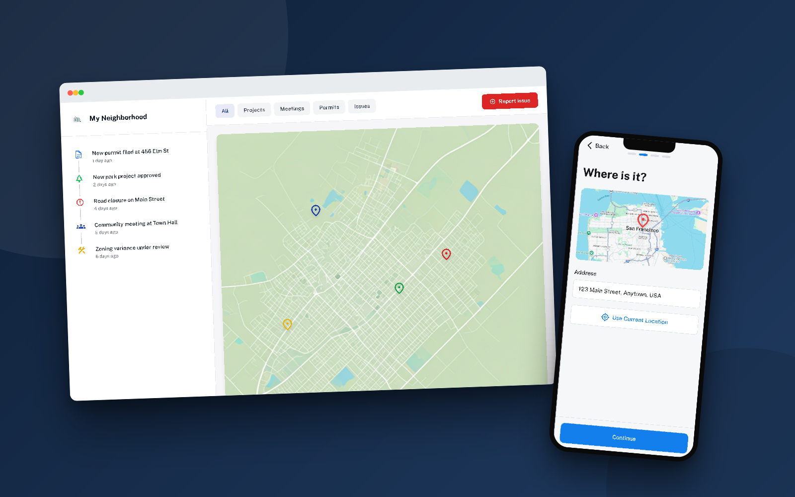

Civic
Platform making local government accessible, understandable, and actionable for everyday residents

The Problem
Local decisions shape daily life more than national politics, yet local government information is scattered across dozens of outdated websites, written in bureaucratic language, with no clear path to action. Only 32% of Americans feel informed about the local decisions that directly affect them.
The Strategy
Reduce three barriers — findability, language, and friction — with three corresponding bets: filter everything by your neighborhood instead of by department, translate bureaucratic language to plain English, and make taking action a mobile-first, multi-step flow.
Research That Set the Strategy
Fewer than 5% of residents attend city council meetings, and 78% of Americans can't name their city council representative — not because people don't care, but because the system is structured against them. I interviewed 10 residents, audited 5 government websites, and surveyed 78 people across 4 cities to find where the structure fails.
Source note: unless a citation says otherwise, statistics in this case study come from this primary research — the 78-person survey across 4 cities, 10 resident interviews, 5 government website audits, and my own usability testing.
Three Barriers Became Three Bets
- Findability: The average city spreads information across 12+ disconnected portals, organized by department — but residents care about their street, not org charts. → Bet on geography-first navigation.
- Language: Government documents average a 14th-grade reading level while 54% of Americans read at or below 6th grade, and 89% of my survey respondents didn't understand how to influence local decisions. → Bet on plain-English translation as a core feature, not a courtesy.
- Friction: Participation is designed around 6pm-Tuesday meetings and desktop-era forms, excluding working parents and shift workers. → Bet on mobile-first action flows.
"I care about my community, but I don't have time to become an expert in municipal bureaucracy just to find out if they're going to put a grocery store where the vacant lot is."
Bet 1: Neighborhood First, Not Department First
Civic opens on a map of your neighborhood: colored pins for meetings, approved projects, pending items, and reported issues within a mile of home, with subscriptions per neighborhood. Geographic relevance replaces category navigation entirely.
Desktop Platform Views

Neighborhood Dashboard

Activity Feed View

Project Listing
Navigate to "City Planning" → "Current Projects" → Search database → Filter by address → Read 45 results
Open app → See 5 relevant projects on map in YOUR neighborhood immediately
Bet 2: Plain English as a Core Feature
Every project page carries a toggle between official legal language and plain English, plus a "Key Information" breakdown: what's proposed, why it matters, who to contact, next steps. Working with city planning departments, I built a translation system — plain alternatives for the 50 most common bureaucratic terms, an 8th-grade reading-level target, and visual timelines instead of procedural text.
Project Detail with Plain English

"When I switched to Plain English, I actually understood what the zoning variance meant for my street. This should be how they write it in the first place."
Bet 3: Mobile-First Action Flows
78% of my survey respondents said they'd engage with local government from their phones — where existing sites were broken or absent. I designed the three most common actions (report an issue, find a meeting, submit comment) as focused mobile flows with plain-language titles ("Discussion on Main St. Bike Lane," not "Public Hearing 2024-HC-47"), social proof ("12 residents interested"), and one-tap add-to-calendar.
Mobile User Flows

Report Issue - Location

Report Issue - Category

Report Issue - Details

Meetings Calendar

Meeting Details

Additional Features
The Multi-Step Decision, Backed by Testing
Long single-page forms are where civic intent goes to die on mobile. Breaking reporting into focused steps cut abandonment by two-thirds:
8-field form, 67% abandonment, 4.2 min completion time
4 focused screens, 23% abandonment, 2.1 min completion time
Accessibility as a Requirement, Not a Feature
A government platform that isn't accessible to all residents fails at its one job. Civic meets WCAG 2.1 AA: 4.5:1 minimum contrast, 44px touch targets, full keyboard and screen-reader support, and status conveyed by icon + color (never color alone). The palette itself is strategic — a blue that tested as "official but approachable," with a colorblind-safe semantic status system.
Key Takeaways
- Strategy is picking the right barriers: Findability, language, and friction — each bet mapped to a measured barrier, and each moved the engagement number.
- Language is design: The Plain English toggle had outsized impact — clear communication removed more exclusion than any visual decision.
- Location beats taxonomy: People care about their street, not citywide categories. Geography-first navigation is why task time dropped 68%.
- Mobile-first is equity: Designing for working parents, shift workers, and non-native speakers is what "civic engagement" actually requires.